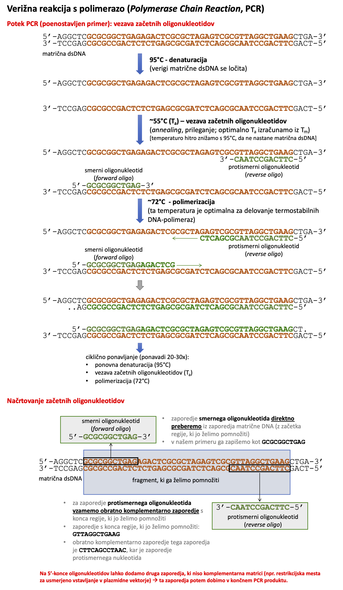

VAJA: Enostavna analiza nt-zaporedja (Python)
Contents
VAJA: Enostavna analiza nt-zaporedja (Python)¶
Podobno kot za iskanje prek programskega dostopa bomo tudi tukaj uporabili BioPython.
Za osvežitev znanja iz programiranja v Pythonu ter kot uvod v manipulacije z bio-podatki bomo pripravili enostaven programček, ki bo kot vhod vzel kratko nukleotidno zaporedje, ga analiziral ter izpisal rezultate analize.
Teoretično ozadje¶
Vaša naloga je napisati enostaven programček, ki pomaga pri načrtovanju začetnih oligonukleotidov pri verižni reakciji s polimerazo - PCR. Kratek filmček, kjer je razložen potek reakcije, je na voljo na YouTube, potek skupaj z zaporedjem matrice in oligonukleotidov pa je shematsko prikazan na spodnji sliki. Kot je iz slike razvidno sta za reakcijo potrebna dva začetna oligonukleotida, imenovana smerni in protismerni (začetni) oligonukleotid (v žargonu ju imenujemo forward and reverse oligos).

Iz zgornje sheme je razvidno, da lahko zaporedje enega (smernega) oligonukleotida direktno določimo iz zaporedja matrice, za zaporedje drugega (protismernega) pa uporabimo obratno-komplementarno zaporedje ustreznega dela matrice.
Pri načrtovanju oligonukleotidov je priporočljivo upoštevati nekaj osnovnih pravil, ki pripomorejo k večji uspešnosti reakcije in manjši količini nespecifičnih produktov. Z iskanjem po spletu lahko najdemo kar nekaj priporočil, na primer navodila podjetja Addgene, nekaj osnovnih pa je tukaj:
temperatura tališča (\(T_m\)) smernega in protismernega oligonukleotida se naj ne bi razlikovala za več kot 5 °C (kar nam omogoča njuno optimalno vezavo na matrico pri enaki temperaturi prileganja (\(T_a\))), hkrati pa naj bo njuna temperatura tališča nekje med 50 in 60 °C,
delež parov GC naj bo med 40 in 60 %.
Primeri kode¶
Spodaj je predstavljen zgled, kako definiramo nukleotidno zaporedje in dobimo komplementarno ter obratno-komplementarno zaporedje. Prikazano je tudi, kako preštejemo določen nukleotid v zaporedju.
from Bio.Seq import Seq
my_seq = Seq('AGTACACTGGT')
print(my_seq)
print(my_seq.complement())
print(my_seq.reverse_complement())
print(my_seq.count('A')) # preštejemo nek nukleotid
print(len(my_seq)) # dolžina zaporedja
AGTACACTGGT
TCATGTGACCA
ACCAGTGTACT
3
11
Drug način za štetje nukleotidov je, da si pripravimo slovar, na primer:
freq = {}
for x in my_seq:
freq[x]=my_seq.count(x)
print(freq) # izpiše slovar
print('A:', freq['A']) # izpiše, koliko A je v zaporedju
{'A': 3, 'G': 3, 'T': 3, 'C': 2}
A: 3
Pogosto želimo, so vsi nukleotidi napisani bodisi z velikimi ali malimi črkami. Za ta namen lahko uporabimo upper ali lower:
print(my_seq.lower())
agtacactggt
Zaporedje, ki ga analiziramo, lahko definiramo direktno, lahko pa si nastavimo, da nas računalnik sam vpraša po njem. Pri tem je pomembno, da ga pretvorimo v ustrezen objekt!
# na spodnji način bo my_seq niz (string)
my_seq = input('Vpiši nukleotidno zaporedje: ')
print(my_seq)
# tako pa bo kot "sequence object" (seveda moramo prej uvoziti ustrezen modul - glej zgoraj)
my_seq = Seq(input('Vpiši nukleotidno zaporedje: '))
print(my_seq)
Vpiši nukleotidno zaporedje: AGTCTCGGCGGCTAG
AGTCTCGGCGGCTAG
Vpiši nukleotidno zaporedje: AGAGCTGCGCAA
AGAGCTGCGCAA
Naloga¶
Vaša naloga je, da napišete programček, ki bo sprejel nukleotidno zaporedje oligonukleotida (napisano z malimi ali velikimi črkami), ga izpisal z velikimi tiskanimi črkami, izpisal tudi obratno komplementarno zaporedje (spet z velikimi tiskanimi črkami) in zraven tega izračunal (ter izpisal) naslednje parametre:
dolžino oligonukleotida,
delež GC in AT v odstotkih,
temperaturo tališča, izračunano na osnovni način ter tudi na način, ki upošteva koncentracijo soli.
Programi, ki to naredijo, sicer obstajajo, a mi želimo svojega. Eden izmed takih, dostopnih na spletu, je OligoCalc, od katerega si bomo izposodili enačbe za izračun \(T_m\) - izpisane so na pod oknom za vnos in izračun (v razdelku “Melting Temperature (Tm) Calculations”)
Na primer, interakcija s programom ter njegov izhod (izračun) bi naj izgledal nekako takole:
Zaporedje: AGCTGATCGAGGATCG
Obratno komplementarno zaporedje: CGATCCTCGATCAGCT
Dolžina: 15 nt
Delež GC [%]: 56
Delež AT [%]: 44
Tm(osnovna) [°C] = 45.9
Tm(upoštevana sol) [°C] = 50.6
Program lahko pripravljate kar spodaj - pripravite si novo celico in začnite! Na koncu ne pozabite shraniti svojega izdelka.